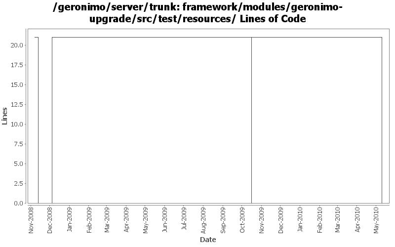

[root]/framework/modules/geronimo-upgrade/src/test/resources

| Author | Changes | Lines of Code | Lines per Change |
|---|---|---|---|
| Totals | 65 (100.0%) | 44 (100.0%) | 0.6 |
| djencks | 23 (35.4%) | 42 (95.5%) | 1.8 |
| rickmcguire | 3 (4.6%) | 1 (2.3%) | 0.3 |
| dwoods | 3 (4.6%) | 1 (2.3%) | 0.3 |
| genspring | 15 (23.1%) | 0 (0.0%) | 0.0 |
| gdamour | 21 (32.3%) | 0 (0.0%) | 0.0 |
GERONIMO-4583 Remove obsolete plugins from plugins group, we don't need to upgrade a 1.0 plan to 1.1 plan anymore.
0 lines of code changed in 15 files:
GERONIMO-5201 Repace service versions of spec bundles with Geronimo latest versions.
1 lines of code changed in 3 files:
GERONIMO-4916 step 2 move sandbox osgi framework into trunk
21 lines of code changed in 8 files:
GERONIMO-4916 step 1 remove old framwork
0 lines of code changed in 8 files:
update other XML files with embedded versions from 2.2-SNAPSHOT to 3.0-SNAPSHOT
1 lines of code changed in 3 files:
GERONIMO-4403 re-add private-classes element handling.
21 lines of code changed in 7 files:
Revert addition of private-classes element. Private classes can be
configured via scripts.
(GERONIMO-4403) Provide a mechanism to hide specific classes of a configuration to all its children
0 lines of code changed in 7 files:
Add private-classes element which allows specific classes to be hidden from all child configurations. In effect, they are private to the configuration.
(GERONIMO-4403) Provide a mechanism to hide specific classes of a configuration to all its children
0 lines of code changed in 14 files: